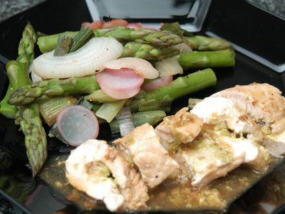

| Zutaten für 4 Personen: | |
| 1 kg | grüne Spargeln |
| 1 | Schalotte |
| 20 g | Butter |
| 50 g | Paniermehl |
| 1 | Ei |
| Salz | |
| Pfeffer | |
| 4 | Truthahnschnitzel à ca. 150 g |
| wenig | Mehl |
| 10 g | Bratbutter |
| 2 dl | Hühnerbouillon |
| 1 El | Sojasauce |
| 1 Tl | Maispuder |
| 1 Bund, ca. 250 g | Frühlingszwiebeln |
| 1 Bund | Radieschen |
| 2 El | Sesamsamen |
Die Spargeln unten frisch anschneiden. Von 200 g Spargeln die Spitzen wegschneiden und diese mit den restlichen Spargeln für das Frühlingsgemüse beiseite legen.
Die abgeschnittenen Spargelstangen fein schneiden und in eine Pfanne geben. Die Schalotte hacken und beigeben.
Spargelstangen und Zwiebeln in 10 g Butter andünsten und zugedeckt auf kleiner Hitze weich garen.
Mit dem Stabmixer pürieren.
Paniermehl und Ei darunter mischen und mit Salz und Pfeffer würzen.
Die Truthahnschnitzel flach klopfen und beidseitig mit Salz und Pfeffer würzen.
Mit der Füllung bestreichen, aufrollen und mit Zahnstocher fixieren.
Leicht mit Mehl bestäuben.
In einer Bratpfanne die Bratbutter erhitzen. Die Trutenröllchen auf allen Seiten anbraten. Herausnehmen und zugedeckt beiseite stellen.
Den Bratfond mit der Bouillon auflösen.
Sojasauce und Maispuder verrühren und zur Bouillon geben.
Aufkochen und die Trutenröllchen hineinlegen. Zugedeckt auf kleiner Hitze 15 Minuten garen.
Die Spargeln schräg in Stücke schneiden. Die Frühlingszwiebeln längs halbieren und ebenfalls schräg in Stücke schneiden. Die Radieschen in feine Scheiben hobeln.
In einer Sauteuse oder beschichteten Bratpfanne die Sesamsamen ohne Fett rösten. Herausnehmen.
Die restliche Butter erwärmen und das vorbereitete Gemüse andünsten. Mit Salz und Pfeffer würzen, zudecken und auf kleiner Hitze knapp weich garen.
Die Trutenröllchen schräg in Stücke schneiden, anrichten und mit der Sauce nappieren. Das Frühlingsgemüse dazu geben und mit den Sesamsamen überstreuen.
Dazu passen feine Nudeln oder Reis.
Pro Person ca 410 Kcal/1715 kJ
Am 26.3.1995 erprobt. Schmeckt ganz ausgezeichnet. Vorsicht: nicht zu viel Pürée herstellen und auf die Schnitzel zu beigen versuchen! Den Zahnstocher längs, nicht quer einstecken da es sonst schwierig wird die Röllchen auf allen Seiten anzubraten. Liess das Gemüse weg und servierte Reis als Beilage.
Am 12.3.2010 schmeckte das eher aufwendige Gericht ebenfalls fein. Ohne Fleischhammer ist das Flachklopfen nicht so einfach und dass Rollen etwas schwieriger. RE
Saison Küche 4/95, Seite 3
@LINKBACK_TAG@ @WAKELOCK@